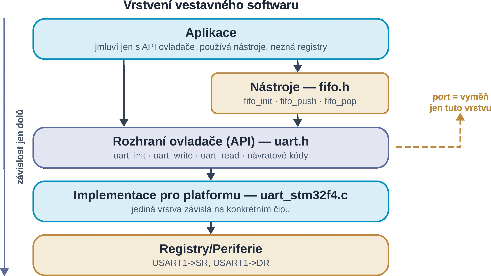
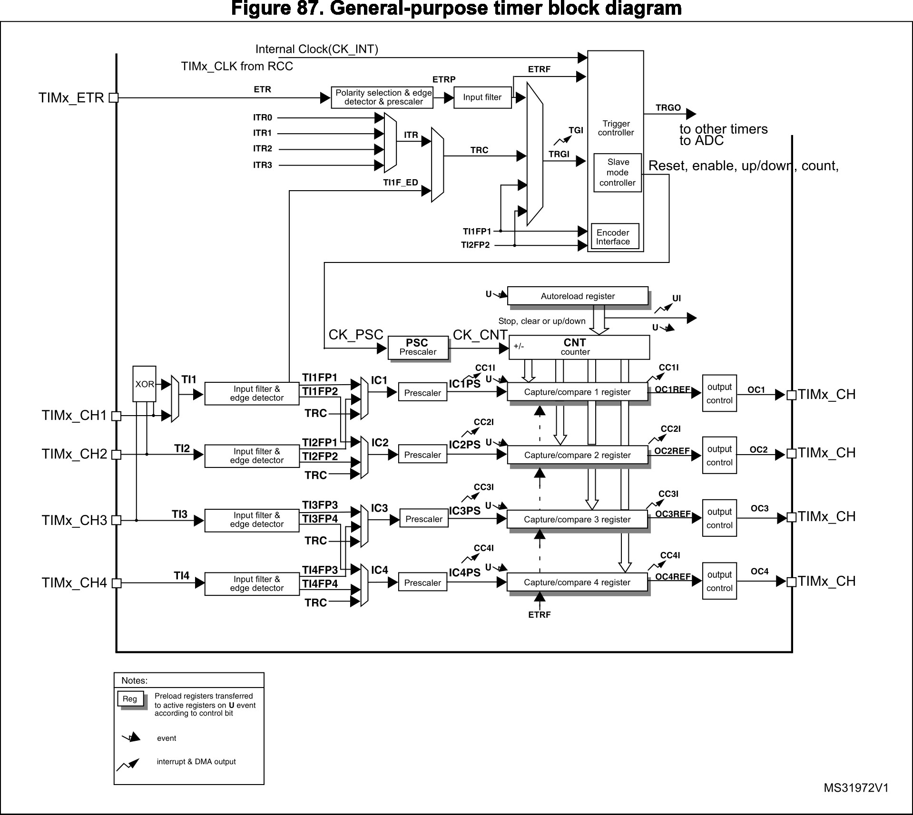
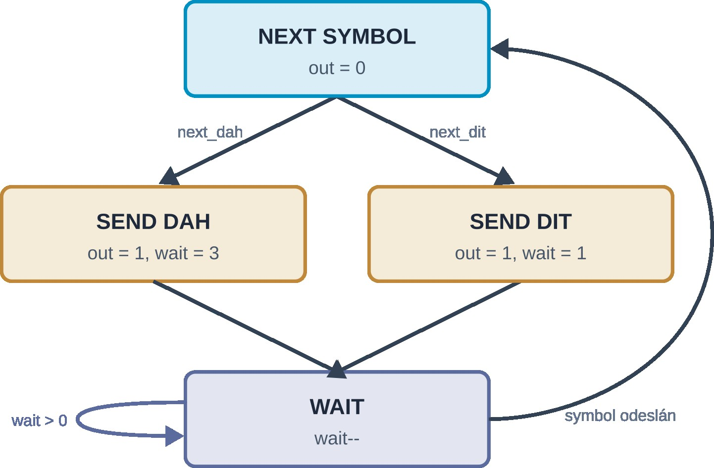
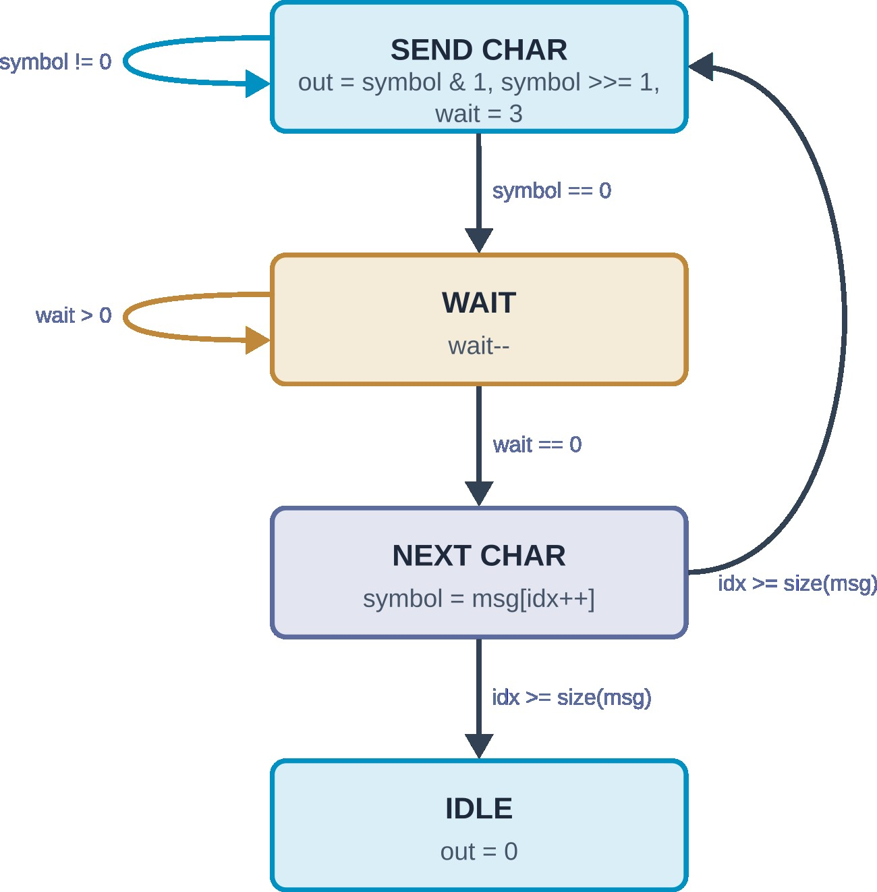

| Kompetence | Členění projektu, Přerušení, Generování signálů, Stavové automaty, Propojení periferie s okolními obvody, Přidání modulu do projektu |
|---|---|
| Periferie | TIM, SYSTICK, NVIC, GPIO, RCC, jádro |
| Kostra kódu | 03_timer-template.zip |
| morse-template.zip | |
| Prezentace | Prezentace |
PWM_OUT (PA8, TIM_CH1)
BUZZER_OUT (PA11, TIM1_CH4)
S rostoucím projektem, roste i množství napsaného kódu.
Psát vše do jednoho hlavní ho souboru/modulu (.c + .h soubor) se velice rychle stává nepřehledné a nepraktické.
Dává tak smysl sdružovat spolu související deklarace a definice do vlastních souborů, například driver.h pro deklarace a driver.c pro definice.
Kompilátor převede každý modul na samostatný objektový soubor, například driver.o.
Potřebné části kódu pak připojíme direktivou #include “driver.h” ve zdrojovém souboru a linker pak spojí všechny potřebné objektové soubory do jednoho finálního spustitelného souboru (app.elf, app.bin nebo app.hex).
Rozdělení kódu do modulů má mnoho výhod. Kód je díky tomu mnohem přehlednější, neboť související části kódu jsou pohromadě. Oddělenost jednotek, čili modularita, pak umožňuje jednak jednoduše sdílet části kódu mezi projekty či nahradit kteroukoliv část alternativní implementací. Například, jeden typický způsob je oddělit kód/logiku aplikace od kódu, který se stará o hardware, jak je ukázáno na obrázku figure 1. Aplikační kód je nezávislý na konkrétním HW, zatímco ovladač je specifický pro daný hardware a platformu. Mezi aplikací a ovladači může navíc být vrstva platformě nezávislých nástrojů (tools), které poskytují různé algoritmy nebo abstraktní datové typy (například FIFO frontu, algoritmy, FFT, pomocné funkce,…). Aplikační kód a nástroje jsou v tomto případně tzv. přenositelný mezi platformami. Aplikace pak “sedí” nad ovladačem (nižšími vrstvami), se kterým komunikuje pomocí definovaného rozhraní (interface). Tomuto se říká abstrakce hardware. Pro “zaručení” modularity je třeba dbát na způsob volání a komunikace mezi vrstvami a to, že:
driver_do_something()),
driver_status = DRIVER_OK).
Je to podobné například mechanizmu signálů v Qt, kde se směrem “nahoru” signalizovalo emitováním signálu.

Časovače slouží k přesnému odměřování času, ať už pro účely zpoždění úkonů, pravidelnému spouštění úloh či prostému měření času. Časovače mohou též měřit uběhnutý čas mezi dvěma událostmi. Podle použití se používají pojmy časovač (timer) a čítač (counter):
Časovač SYSTICK je interní časovač ARM jádra a má ho tedy každý procesor. V tabulce vektorů se nachází na 6. místě; ve výchozím stavu tak má prioritu vyšší než kterékoli jiné přerušení či periferie od výrobce čipu. SYSTICK je proto používán pro generování zpoždění nebo pro pravidelné spouštění plánovače úloh v RTOS (na toto téma se zaměříme na pozdějším cvičení).
Aktivace SYSTICK se provádí funkcí SysTick_Config(ticks) z CMSIS, jejíž parametrem je počet tiků na na periodu.
Příklad zapnutí SYSTICKu s frekvencí jedné milisekundy k měření systémového času je uveden níže.
static uint32_t uiSysTick; void SysTick_Handler(void) { ++uiSysTick; } int main(void) { /* kód */ uiSysTick = 0; if(SysTick_Config(SystemCoreClock / 1000u)) /* nastaveni periody na 1 ms (1000 Hz) */ { /* zachyt chybu */ while (1) ; } NVIC_SetPriority(SysTick_IRQn, 5); /* zmen prioritu na 5 */ /* více kódu */ }
Diagram periferie časovače v STM32F4 je na obrázku figure 2. Mezi hlavní registry časovače patří:
Control Register 1 (CR1), zapíná časovač, nastavuje směr počítání, řídí bufferování registrů,…,
DMA/Interrupt Enable Register (DIER), povoluje události časovače (mohou generovat přerušení),
Status Register (SR), říká, ke kterým událostem časovače došlo,
Auto Reload Register (ARR), určuje maximální hodnotu časovače,
Prescaler (PSC), nastavuje před-děličku hodin časovače,
Count (CNT), drží aktuální stav,
Capture Compare Mode Register (CCMR) nastavení záchytného/porovnávacího kanálu,
Capture Compare Enable Register (CCER) povolení záchytného/porovnávacího kanálu,
Capture Compare Register (CCR) drží hodnotu, která je porovnávána s TIM→CNT v případě porovnávacího kanálu; v případě záchytného kanálu zde najdeme hodnotu TIM→CNT v okamžiku záchytu.

Časovač počítá od 0 do hodnoty v TIM→ARR (směr lze změnit v registru TIM→CR1) s frekvencí $f_{tim}$.
Frekvence časovače $f_{tim}$ je odvozena od $f_{APBx}$ po průchodu předděličkou časovače s dělícím faktorem TIM→PSC + 1.
Pozor, $f_{APBx}$ může být ještě před časovačem zpomalena předděličkou či dvojnásobně zrychlena, viz. RCC schéma ve cvičení GPIO a přerušení.
Registry TIM→ARR a TIM→PSC tak určují periodu, neboli časovou základnu, časovače.
Ta je dána vztahem $T = \frac{(PSC + 1)\cdot(ARR + 1)}{f_{APBx}}$
TIM→ARR běžícího časovače je třeba postupovat opatrně. Může se stát, že nová hodnota TIM→ARR bude nižší než TIM→CNT. V takovém případě časovač pokračuje do své fyzicky maximální hodnoty (například $2^{16}$), dokud nepřeteče, což může zásadně protáhnout jeho periodu.
Proto je možné obsah registru TIM→ARR bufferovat (nastavení v registru TIM→CR1), kdy nová hodnota je aplikována až když časovač dokončí aktuální periodu (přesněji s dalším update událostí).
Časovač typicky provozujeme v režimech [STM32F4_RM]:
ARR (událost přetečení overflow či update),
n časovače na sestupnou či náběžnou hranu, v momentě, kdy k tomu dojde, tak se uloží aktuální hodnota TIM→CNT do registru TIM→CCRn (sekce 13.3.5),
TIM→CNT s hodnotou v TIM→CCRn, podle konfigurace je pak nastavována log. 0 nebo 1 na kanálu časovače n. tento režim se používá například ke generování a řízení PWM (sekce 13.3.8 a 13.3.9).
Komparační režim můžeme použít například pro blikání LEDkou.
V tomto příkladu bude LEDka připojena ke kanálu 4 časovače TIM3 (TIM3_CH4).
Pomocí registrů TIM→PSC a TIM→ARR stanovíme frekvenci blikání, například na 2 Hz, přičemž frekvence $f_{tim}$ je 16 MHz.
Kanál 4 nastavíme do komparačního režimu, konkrétně do PWM módu, kdy CH4 je aktivní když platí TIM→CNT < TIM→CCR4, toto nastavení je v TIM→CCMR2
V registru TIM→CCER bity CC4P určují, s jakou logickou úrovní koresponduje aktivní kanál a
Hodnotou v TIM→CCR4 stanovíme, jak dlouho bude v každé periodě LEDka svítit.
TIM3->PSC = 8000 - 1; /* 16 MHz / (8000 - 1 + 1) = 2 kHz */ TIM3->ARR = 1000 - 1; /* 2 kHz / (1000 - 1 + 1) = 2 Hz */ TIM3->CCR4 = 250; /* Strida 25 % */ TIM3->CCMR2 = (6u << TIM_CCMR2_OC4M_Pos); /* PWM mod, kanal 4 aktivni dokud CNT < CCR*/ TIM3->CCER = TIM_CCER_CC4E; /* Aktivuj kanal 4, kanal 4 je aktivni v logicke 1 */ TIM3->CR1 |= TIM_CR1_CEN; /* Zapni casovac */
Propojení fyzických GPIO pinů a periferií je dosaženo přes tzv. alternativní funkce (AF) pinů. Připojení funkcí k pinům se liší pro každý specifický čip a proto tento popis nalezneme v datovém listu mikrokontroléru. Pro STM32F401RET nalezneme mapování alternativních funkcí na piny v tabulce 9 v datovém listu [STM32F4_DS]. Každý pin může mít jednu z 16 různých alternativních funkcí.
Nastavení AF probíhá ve dvou krocích.
Nejprve je třeba nastavit požadovanou AF v registrech GPIO→AFRL nebo GPIO→AFRH.
Poté můžeme změnit mód pinu na alternativní funkci v registru GPIO→MODER.
Od toho momentu daná periferie přebírá kontrolu nad pinem.
Níže je příklad projení LEDky s časovačem z předchozího příkladu.
V příkladu LEDka připojena ke GPIO pinu PB1 a jeho alternativní funkce číslo 2 je právě kanál 4 časovače 3 (TIM3_CH4).
GPIOB->MODER &= ~GPIO_MODER_MODE1_Msk; GPIOB->AFR[0] &= ~GPIO_AFRL_AFSEL1_Msk; GPIOB->AFR[0] |= 2u << GPIO_AFRL_AFSEL1_Pos; GPIOB->MODER |= 2u << GPIO_MODER_MODE1_Pos;
Každý znak je zakódován pomocí symbolů tečka, čárka, které jsou odděleny mezerou.
Slova jsou oddělena delší mezerou.
Délka každého symbolu a mezery je dána počtem časových jednotek.
Délka časové jednotky je $T_{\mathrm{dit}} = \frac{1200}{\mathrm{WPM}} [\mathrm{ms}]$, kde $\mathrm{WPM}$ je počet slov PARIS za minutu (Words Per Minute, Morse code na Wikipedii).
Délky jsou uvedeny v tabulce níže.
| Symbol | Tečka (dit) | Čárka (dah) | Mezera mezi symboly | Mezera mezi znaky | Mezera mezi slovy |
|---|---|---|---|---|---|
| Časových jednotek | 1 | 3 | 1 | 3 | 7 |
Pro odeslání znaku je třeba vyslat symboly v určitém pořadí a s určitým časováním. K tomu se k hodí použít stavový automat (Finite State Machine, FSM), jehož výstup říká, jestli výstup má být aktivní (má být hluk) nebo ne. Toto využijeme k zapínání časovače.
Stavový automat se v jazyce C realizuje řídící strukturou switch-case a stavové proměnné.
Každý čas má přiřazenou svou hodnotu.
Funkce stavového automatu je pravidelně volána a přechod mezi stavy může být buď v reakci na nějakou událost (například hodnota indexu pole je na konci) nebo bez podmínkový (kdy je nutné nejprve provést konfiguraci před vstupem do dalšího stavu).
Pro přehlednost a jednoduchost je doporučeno využít pojmenovaných konstant kompilátoru enum, například state = sendChar, místo číselných literálů (například state = 4).
FSM pro posílání symbolů se nabízí navrhnout se stavy SEND DAH, SEND DIT, NEXT SYMBOL a WAIT.
Stavový diagram je na obrázku figure 4.

FSM výše je sice intuitivní, avšak při rozšíření dalšími stavy pro posílání dalších znaků se stane nepřehledným.
výhodnější implementace využívá toho, že tečka, mezera mají stejnou délku a že čárka “trvá” tři tečky a že znaky nekončí ani nezačínají mezerou.
Pak lze každý znak uchovat v jedné proměnné, kde každý bit reprezentuje buď vysílání či ticho (tečka je pak jedna jednička '1', mezera mezi znaky jedna nula '0' a čárka tři jedničky '111').
Například znak 'A' je kódován jako .- (a-kát), tečka, mezera a čárka.
Symboly pak zapíšeme 0b11101 (čteno zprava doleva).
Pro vysílání nám pak stačí jediný stav SEND CHAR, který se ptá na hodnotu nejnižšího bitu vysílaného znaku a znak postupně posouvá bitovým posunem doprava.
Takovýto FSM, který uvažuje i posílání více znaků, je na obrázku figure 4.
Stavům automatu pak může odpovídat enum
typedef enum enMorseState_e { msIdle, msChar, msNextChar, msWait, msStateCount } enMorseState_t;

Níže je část morseova kódu se zmíněnou reprezentací.
const uint32_t morse_code[] = { ['A'] = 0b11101, /* a-kat */ ['P'] = 0b10111011101, /* po-zar-ni-ci */ ['M'] = 0b1110111, /* ma-va */ /* zbytek */ }
Ve vestavných systémech se často setkáváme s úlohami, které je třeba periodicky provádět.
Například obnovení displeje či měření teploty.
Výše jsme se seznámili s periferií SYSTICK, která se ke spouštění takovýchto úloh perfektně hodí.
Každá úloha však má jinou periodu spouštění a jiná data, která pro svou práci potřebuje.
Proto je třeba zvolit vhodnou periodu SYSTICK, například 1 milisekundu, aby úlohy mohly být spouštěny s požadovanou periodou.
Odpočet pro spuštění spolu s nastavením periody spouštění může být právě součástí dat každé úlohy.
Například
/* task.h */ typedef struct taskdata_s { uint32_t cnt, period; int32_t (*run)(void); /* ukazatel na funkci, ktera ulohu provede,... ano to C umí */ /* dalsi data ulohy */ } taskdata_t; extern taskdata_t task; /* zverejni data ulohy mimo tento modul */ void task_init(void); /* task.c */ taskdata_t task; int32_t task_function(void) { /* ... */ } void task_init(void) { task.cnt = 1; /* Spust se pri prvnim SYSTICK ticku */ task.period = 120; /* spust se kazdych 120 ms, pokud perioda SYSTICK je 1 ms */ task.run = task_function; /* dalsi inicializace */ }
Při každém tiku SYSTICK je odpočet spuštění dekrementován o jedničku.
Jakmile dosáhne odpočet nuly, je úloha spuštěna a odpočet obnoven.
void hadle_systick(void) { if(--task.cnt == 0) { task.cnt = task.period; /* Obnov odpocet */ task.run(); /* spust ulohu */ } }
SYSTICK to může vypadat takto
static uint32_t uiSysTick = 0; volatile uint32_t FL_systick = 0; /* Flag/Priznak, ze doslo k preruseni */ void SysTick_Handler(void) { ++uiSysTick; FL_systick = 1; } int main(void) { /* nejaky kod */ while(1) { /* dalsi kod */ if(FL_systick) { FL_systick = 0; /* vycisti priznak at muzeme cekat na dalsi */ handle_systick(); } /* dalsi kod */ } return 1; }
TIMx→PSC a TIMx→ARR na rozlišení časovače?
GPIOx→AFRL a GPIOx→AFRH)?
enum místo číselných literálů při programování (nejen v kontextu FSM)?
volatile?
stm32f4xx.h? Tedy, aby nebylo nutné funkcím předávat ukazatel na konkrétní GPIO periferii. Šlo by využít nějaké mapování či aliasování?